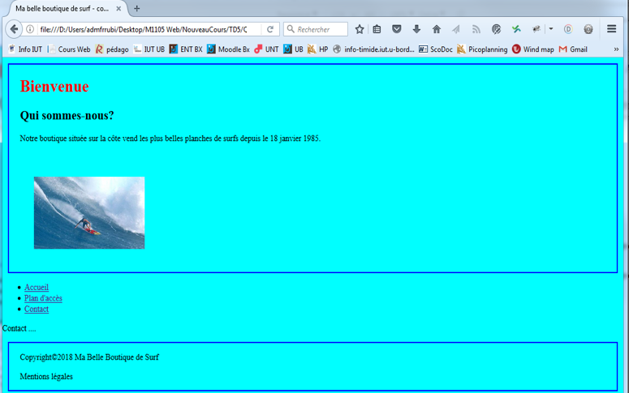

Séance 3 : Exercices
Compétences à acquérir lors de la séance 3 :
Cette séance vise à vous faire travailler sur les compétences acquises lors des deux dernières séances
- Savoir créer des sélecteurs
- Savoir choisir et utiliser les balises les plus courantes
- Tester la conformité de votre code
Exercices 1 à 7 : savez-vous créer des sélecteurs CSS et appliquer un style ?
Exercice 1
Rendez-vous sur cette page. Ecrivez (sans toucher au html) le css permettant de reproduire le rendu suivant :
- Le tire principal est en vert
- les images ont toutes la même taille (100px)
- Les images de légumes ont un cadre vert et celles de légumes ont un cadre jaune
- La couleur du fond d'un paragraphe se transforme en noir au survol de la souris (cf image ci-dessous)
- Pensez à optimiser vos sélecteurs !

Exercice 2
Rendez-vous sur cette page. Ecrivez (sans toucher au html) le css permettant de reproduire le rendu suivant :
- Toutes les images disparaissent, toutes les adresses disparaissent (cf attribut display et visible )
- Les noms des universités restent
- Pensez à optimiser vos sélecteurs !

Exercice 3
Rendez-vous sur cette page. Ecrivez (sans toucher au html) le css permettant de reproduire le rendu suivant :
- Les deux derniers items sont en rouge
Exercice 4
Rendez-vous sur cette page.
Essayez de comprendre pourquoi le texte s'affiche en orange
Exercice 5
Rendez-vous sur cette page.
Ecrivez deux exemples de html correspondant au sélecteur css écrit dans style.css :
Exercice 6
Rendez-vous sur cette page.
Ecrivez deux exemples de html correspondant au sélecteur css écrit dans style.css :
Exercice 7
Rendez-vous sur cette page.
Ecrivez un exemple de html correspondant au sélecteur css écrit dans style.css :
Exercices 8 à 13 : savez-vous découper votre page et appliquer des styles ?
Exercice 8 : Réalisation des pages d'un site de boutique de surf
En prenant exemple sur l’image ci-dessous construisez, dans un fichier index.html, le squelette de votre site contenant :
- Un titre de page.
- Ajoutez un titre principal, suivi de titres secondaires.
- Un petit paragraphe d’introduction expliquant aux visiteurs qu’ils sont sur le site d’une boutique de planches de surfs serait utile.
- Une illustration
- Ajoutez une liste pour les différentes planches et accessoires disponibles.
- Un paragraphe « Copyright » et un paragraphe « Mentions légales »
Exercice 9 : zoning
Nous venons d’ajouter des paragraphes, des titres, des listes, mais il serait intéressant de rassembler les éléments par zones notamment dans le but de pouvoir, par la suite, leur donner un style particulier.
Découper la page en une zone « en-tête », une zone « produits » et une zone « pied de page ». La zone « produits » sera redécoupée en deux sous zones. Vous utiliserez les balises sémantiques HTML5 adéquates et si nécessaire la balise div.
La balise div permet d’englober tout autre type d’élément (à la différence d’un paragraphe qui ne peut être composé d’autres paragraphes par exemple). On décide de regrouper dans l’en-tête les éléments allant de “Bienvenue“ à l’image du surfeur.
L'image ci-dessous vous sert à comprendre comment découper votre code. Vous n'avez pas à créer les bordures de couleur ou le fond beige.
Exercice 10 : navigation dans le site
Notre site est composé de plusieurs pages ; nous allons donc créer d’autres pages et des liens permettant de naviguer d’une page à l’autre.
- En vous basant sur la première page réalisée (les zones « en-tête » et « pied de page » seront
reproduits à l’identique), créez deux nouvelles pages :
- une page « plan d’accès »
- une page « contact ».
- Ajoutez une zone « menu » permettant de naviguer de page en page.
Un peu de style SVP !
-
Créer une feuille de style permettant de définir :
- La couleur du fond du site (background-color), valeur « aqua » ou #00ffff
- La couleur du titre de la page (color), valeur « red » ou #ff0000
- La marge de l’image (margin), marge haute : 40px, marge basse : 20px, marge gauche : 25px
- Ajoutez dans vos pages html la balise link mettant en relation votre feuille de style.
Jouons avec des boites
Selon les spécifications du W3C, tout élément structuré par une balise HTML (ou plusieurs) se représente sous forme d'une boîte rectangulaire définie par diverses composantes que sont:
- la zone de son contenu, représentée par une largeur et une hauteur : en CSS, il s'agit des propriétés width et height
- Un espace réservé à la bordure de la boîte (propriété border)
- Une marge interne à la boîte (padding), se situant entre la zone de contenu et la bordure
Une dernière composante représente la marge externe (margin) et se situe hors de la boîte, au-delà de l'espace alloué à la bordure. Elle affecte le positionnement de l'élément puisqu'elle pousse sa boîte ou ses soeurs environnantes. Toutes ces composantes doivent être prises en considération : contrairement à ce que beaucoup pensent, un élément n'occupe pas uniquement l'espace déterminé par sa valeur width, mais aussi celui de ses marges internes padding et ses bordures.

Exercice 12
- Sur la partie haute (header) du site, ajoutez une bordure de 2px, solide et de la couleur de votre choix, une marge intérieure à gauche et à droite de 20px, une marge extérieure de 10 px.
- Sur la partie basse du site (footer), ajoutez une bordure de 2px, solide et de la couleur de votre choix, une marge intérieure à gauche et à droite de 20px, une marge extérieure de 10px.
- Tous les éléments de la liste du “menu“ ne sont plus précédés d’un point,
- Tous les éléments des listes de produits ou d’accessoires soient précédés d’un carré et plus d’un point.

Exercice 13
En utilisant la sélection en héritage, faire que les titres des listes de produits soient en italique de couleur #395699 et avec une marge intérieure gauche de 5 pixels.
A la fin de l'éxercice, votre site (qui est de toute beauté), est composé de trois pages et doit ressembler à celui de la vidéo :
Powered by w3.css